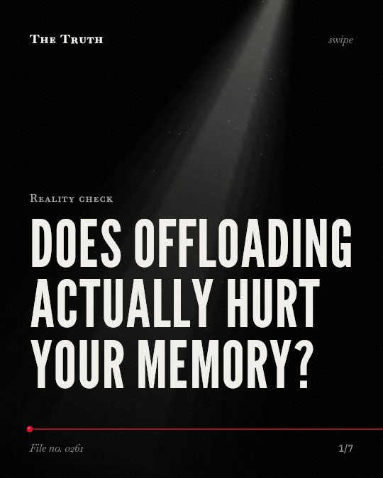

Reality check
Does offloading actually hurt your memory?

Offloading can improve performance without harming memory.
This occurs when you have an explicit goal to retain the information and are aware of a future test.
Supported. At least one solid peer-reviewed study. The evidence is mixed.
What the research found
Cognitive offloading is not detrimental for long-term memory formation when participants are forced to offload maximally and are aware of the upcoming memory test.
“Those participants who were forced to offload maximally but were aware of the memory test could almost completely counteract the negative impact of offloading on memory.”
Experiment, 2021. Grinschgl et al., Quarterly Journal of Experimental Psychology.
Increasing the costs for offloading reduces offloading behavior, which leads to lower immediate task performance but more accurate memory in an unexpected test.
“In Experiment 1 ( N = 172), we showed that increasing the costs for offloading induces reduced offloading behaviour. This reduction in offloading came along with lower immediate task performance but more accurate memory in an unexpected test.”
Experiment, 2021. Grinschgl et al., Quarterly Journal of Experimental Psychology.
Cognitive offloading may be a valid compensatory strategy to improve performance of memory-based tasks for individuals with a wide range of memory ability.
“Instead, our findings suggest that cognitive offloading may be a valid compensatory strategy to improve performance of memory-based tasks for individuals with a wide range of memory ability.”
Study, 2020. Morrison & Richmond, Cognitive Research Principles and Implications.
Internal memory feels effortful but reminders do not, which can be explained by an opportunity-cost model of cognitive effort.
“These results are consistent with an opportunity-cost model of cognitive effort, which can explain why internal memory feels effortful but reminders do not.”
Study, 2024. Gilbert, Cognition.
Offloading information confers a performance advantage over relying on internal memory stores, particularly at higher memory loads.
“Here, we find that offloading information confers a performance advantage over relying on internal memory stores, particularly at higher memory loads.”
Study, 2020. Morrison & Richmond, Cognitive Research Principles and Implications.
The ordered condition improved task performance for children with low working memory ability.
“Across two experiments (total N = 166) the ordered condition improved task performance for children with low working memory ability.”
Experiment, 2019. Berry et al., Cognitive Science.
The trade-off of cognitive offloading.
Offloading information gives you a performance advantage at high memory loads. However, it can harm memory accuracy unless you have a specific goal to remember the data.
The cost of convenience.
That may be why your reliance on external tools feels effortless. It allows you to perform tasks now, but your brain may not store the data unless you consciously intend to.
This part is our reading of the evidence, not a finding.
A list on your phone.
You write down a grocery list at your desk. You complete the task quickly. You do not remember the items by the time you reach the store.
The honest summary
The evidence shows that offloading is a complex trade-off where it improves immediate task performance but can harm memory unless the user has an explicit goal to retain the information.
The research highlights that the impact of offloading on memory is highly dependent on the user's awareness and specific goals during the task.
What will you remember tomorrow?
Sources
- Sandra Grinschgl, Frank Papenmeier, Hauke S. Meyerhoff (2021). Consequences of cognitive offloading: Boosting performance but diminishing memory. Quarterly Journal of Experimental Psychology. Experiment, cited 185 times.
- Ed D. J. Berry, Richard John Allen, Mark A Mon-Williams et al. (2019). Cognitive Offloading: Structuring the Environment to Improve Children's Working Memory Task Performance. Cognitive Science. Experiment, cited 46 times.
- Alexandra B. Morrison, Lauren L. Richmond (2020). Offloading items from memory: individual differences in cognitive offloading in a short-term memory task. Cognitive Research Principles and Implications. Study, cited 107 times.
- Sam J. Gilbert (2024). Cognitive offloading is value-based decision making: Modelling cognitive effort and the expected value of memory. Cognition. Study, cited 74 times.
Also read for this file, not quoted
- Gilbert et al. (2022). Outsourcing Memory to External Tools: A Review of ‘Intention Offloading’.
- Pandey et al. (2020). Cognitive Offloading: Systematic Review of a Decade.
This file was researched and drafted by software, then checked by rules a model cannot talk its way around: each quote above was matched word for word against the paper, and every number had to appear in it. How files are made.